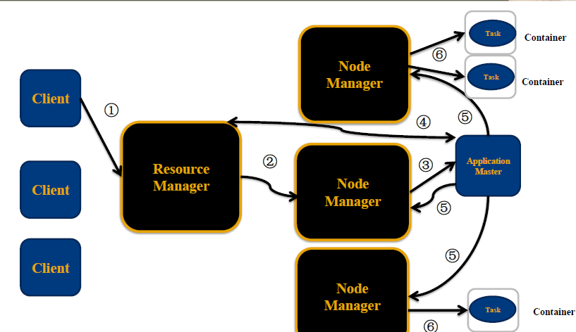

资源调度框架 YARN
3.1.1 什么是YARN
- Yet Another Resource Negotiator, 另一种资源协调者
- 通用资源管理系统
- 为上层应用提供统一的资源管理和调度，为集群在利用率、资源统一管理和数据共享等方面带来了巨大好处
3.1.2 YARN产生背景
通用资源管理系统
- Hadoop数据分布式存储（数据分块，冗余存储）
- 当多个MapReduce任务要用到相同的hdfs数据， 需要进行资源调度管理
- Hadoop1.x时并没有YARN，MapReduce 既负责进行计算作业又处理服务器集群资源调度管理
服务器集群资源调度管理和MapReduce执行过程耦合在一起带来的问题
Hadoop早期, 技术只有Hadoop, 这个问题不明显
随着大数据技术的发展，Spark Storm ... 计算框架都要用到服务器集群资源
如果没有通用资源管理系统，只能为多个集群分别提供数据
- 资源利用率低 运维成本高
Yarn (Yet Another Resource Negotiator) 另一种资源调度器
- Mesos 大数据资源管理产品
不同计算框架可以共享同一个HDFS集群上的数据，享受整体的资源调度

3.1.3 YARN的架构和执行流程
- ResourceManager: RM 资源管理器 整个集群同一时间提供服务的RM只有一个，负责集群资源的统一管理和调度 处理客户端的请求： submit, kill 监控我们的NM，一旦某个NM挂了，那么该NM上运行的任务需要告诉我们的AM来如何进行处理
- NodeManager: NM 节点管理器 整个集群中有多个，负责自己本身节点资源管理和使用 定时向RM汇报本节点的资源使用情况 接收并处理来自RM的各种命令：启动Container 处理来自AM的命令
- ApplicationMaster: AM 每个应用程序对应一个：MR、Spark，负责应用程序的管理 为应用程序向RM申请资源（core、memory），分配给内部task 需要与NM通信：启动/停止task，task是运行在container里面，AM也是运行在container里面
- Container 容器: 封装了CPU、Memory等资源的一个容器,是一个任务运行环境的抽象
- Client: 提交作业 查询作业的运行进度,杀死作业

1，Client提交作业请求
2，ResourceManager 进程和 NodeManager 进程通信，根据集群资源，为用户程序分配第一个Container(容器)，并将 ApplicationMaster 分发到这个容器上面
3，在启动的Container中创建ApplicationMaster
4，ApplicationMaster启动后向ResourceManager注册进程,申请资源
5，ApplicationMaster申请到资源后，向对应的NodeManager申请启动Container,将要执行的程序分发到NodeManager上
6，Container启动后，执行对应的任务
7，Tast执行完毕之后，向ApplicationMaster返回结果
8，ApplicationMaster向ResourceManager 请求kill
3.1.5 YARN环境搭建
1）mapred-site.xml
<property>
<name>mapreduce.framework.name</name>
<value>yarn</value>
</property>
2）yarn-site.xml
<property>
<name>yarn.nodemanager.aux-services</name>
<value>mapreduce_shuffle</value>
</property>
3) 启动YARN相关的进程 sbin/start-yarn.sh
4）验证 jps ResourceManager NodeManager http://192,168.19.137:8088
5）停止YARN相关的进程 sbin/stop-yarn.sh